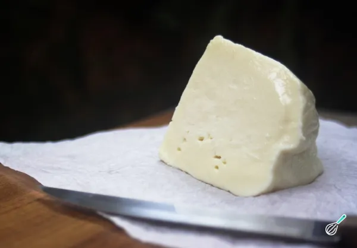

Pão de Queijo – Um Clássico da Culinária Mineira

O queijo Minas é um dos produtos mais emblemáticos do Brasil, especialmente do estado de Minas Gerais. Feito com leite de vaca, esse queijo tem uma textura leve, sabor suave e levemente ácido, com um frescor característico. Ele é versátil e pode ser consumido puro, em sanduíches, saladas ou em preparações tradicionais, como o pão de queijo. Existem variações, como o queijo Minas frescal, mais úmido e macio, e o meia-cura, que tem sabor mais pronunciado por passar por um processo de maturação mais longo.
Modo de Preparo do Queijo Minas Frescal
Ingredientes:
- 5 litros de leite integral fresco (preferencialmente de fazenda)
- 1 colher de chá de cloreto de cálcio diluído em 50 ml de água (opcional, para melhorar a coagulação)
- 1/4 de colher de chá de coalho líquido (ou conforme as instruções do fabricante)
- 1 colher de sopa de sal
Passo a Passo:
- Aqueça o leite: Em uma panela grande, aqueça o leite a 36°C (temperatura morna).
- Adicione o cloreto de cálcio (opcional): Misture o cloreto de cálcio diluído no leite morno, mexendo bem.
- Adicione o coalho: Coloque o coalho no leite e mexa delicadamente. Cubra a panela e deixe o leite descansar por cerca de 40 minutos a 1 hora, até que a coalhada se forme.
- Corte a coalhada: Após a coagulação, corte a coalhada em cubos pequenos usando uma faca longa. Deixe descansar por 10 minutos.
- Aqueça e mexa: Leve a panela ao fogo baixo, aquecendo lentamente a coalhada a 42°C, enquanto mexe suavemente para liberar o soro.
- Separe o soro: Retire o excesso de soro com uma concha. Coloque a coalhada em uma forma de queijo (com furos para escorrer o soro) e pressione levemente para moldar.
- Salga e maturação: Salpique sal na superfície do queijo e deixe descansar por algumas horas. Se desejar um queijo meia-cura, deixe maturar em local fresco por até 15 dias.
Pronto! O queijo Minas pode ser apreciado fresco ou levemente maturado, com um sabor delicioso e textura irresistível.